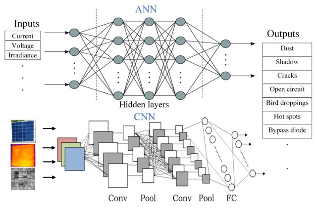
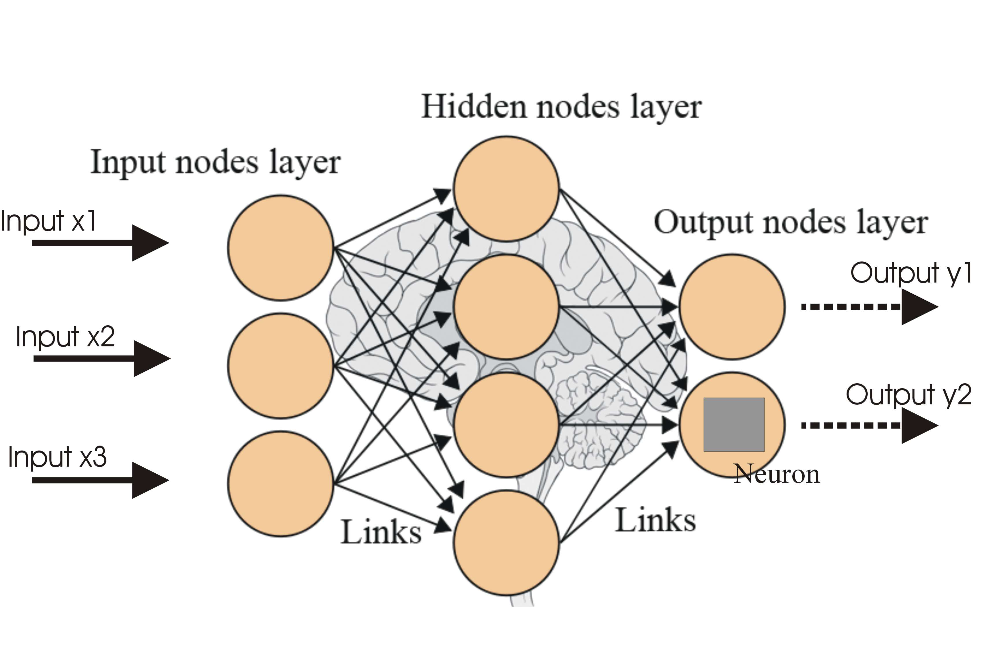

I am a passionate developer focused on building scalable systems and deep learning applications. I enjoy optimizing algorithms, managing clean architectures, and translating complex logic into seamless user experiences. Driven by curiosity, I constantly explore modern framework capabilities while maintaining a strong foundational grip on underlying web technologies.
Technical Skills:

An image classification network optimized for medical image analysis and pattern recognition using TensorFlow. Features custom layer optimization for specialized computer vision tasks.
Python | TensorFlow | CNNA sequential hybrid model stacked with recurrent neural networks (LSTM / GRU) for multi-class textual classification and fake news filtering tasks.
NLP | LSTM | Scikit-Learn
A research-oriented data integration system mapping structured knowledge graphs directly into natural language processing pipelines for advanced query parsing.
Graph Networks | LLMs | PyTorch| Exam | CGPA / GPA | Year |
|---|---|---|
| B.Sc Engg. in Information and Communication Technology | 3.96 | 2025 |
| HSC | 5.00 | 2019 |